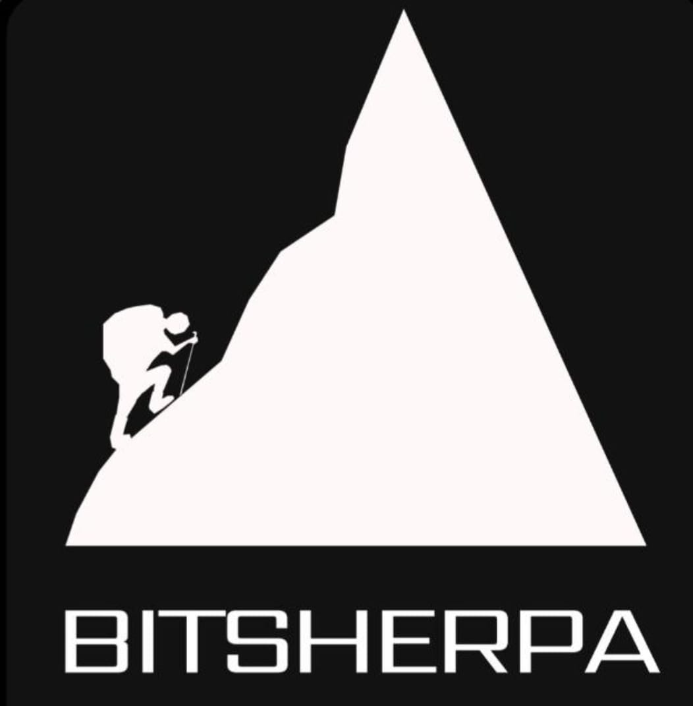

01
Menos trabalho manual
Agentes executam tarefas repetitivas entre sistemas, eliminando digitação, conferência e acompanhamento desnecessários.
A doc.do cria uma camada inteligente sobre os sistemas que equipes médicas já utilizam. Agentes reduzem trabalho manual, evitam falhas e transformam produção validada em uma infraestrutura financeira mais eficiente.
Hospitais e equipes já operam com sistemas de escala, faturamento, RH, financeiro e ERPs legados. A doc.do se integra a esse ambiente e adiciona agentes capazes de executar tarefas entre sistemas e pessoas.
camada agêntica
Agentes executam tarefas repetitivas entre sistemas, eliminando digitação, conferência e acompanhamento desnecessários.
Regras e validações acontecem antes que pequenas inconsistências se transformem em retrabalho, atraso ou glosa.
Cada ação deixa uma trilha operacional estruturada: quem fez, quando fez, onde aconteceu e qual valor econômico foi gerado.
Data, hora, local, equipe, procedimento, pagador e documentação definem não apenas a assistência — definem também a origem de um recebível.
A doc.do pretende transformar recebíveis médicos validados em lotes financiáveis, conectando equipes que precisam antecipar capital de giro a parceiros de capital qualificados.
Procedimentos acontecendo todos os dias geram fluxo constante e observável.
Grupos com dezenas ou centenas de médicos exigem coordenação operacional real.
O trabalho acontece agora; o recebimento pode demorar meses.
Procedimentos são eventos específicos que podem ser documentados e auditados.
A visão é construir uma private desk de recebíveis médicos: originar, validar, estruturar e acompanhar operações — deixando o funding com parceiros que tenham mandato e capacidade para financiá-las.

Todo alpinista bem-sucedido precisa de um sherpa. A Bitsherpa nasceu para ajudar empresas a alcançar o pico da tecnologia — e a doc.do é uma aplicação concreta dessa missão no mercado de saúde.
Se você opera equipes médicas, financia crédito privado, estrutura recebíveis ou quer construir essa tese conosco, fale diretamente com a Bitsherpa.
Abrir WhatsApp aponte a câmera e fale conosco
aponte a câmera e fale conosco